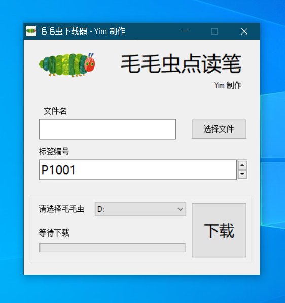

毛毛虫点读笔下载器
📥 立即下载
Windows 客户端 · 开源免费
文件：毛毛虫点读笔下载器.exe
📥 工具介绍
专为毛毛虫点读笔开发，一键将音频文件下载到点读笔，操作简单、无需技术，插上即可用。
📖 使用步骤
1. 毛毛虫点读笔用数据线连接电脑
2. 打开 毛毛虫点读笔下载器.exe
3. 选择需要的音频资源
4. 点击开始下载，等待完成
5. 安全断开点读笔即可正常使用
⚠️ 安全提示（必看）
软件打开时电脑提示病毒、风险、未知应用，均为正常现象！
原因：本软件使用易语言（E语言）开发，杀毒软件普遍会误报。
解决方法：
临时关闭杀毒 → 允许运行 → 信任软件
即可正常使用。
软件
完全开源、无病毒、无捆绑、无后门
，放心使用！